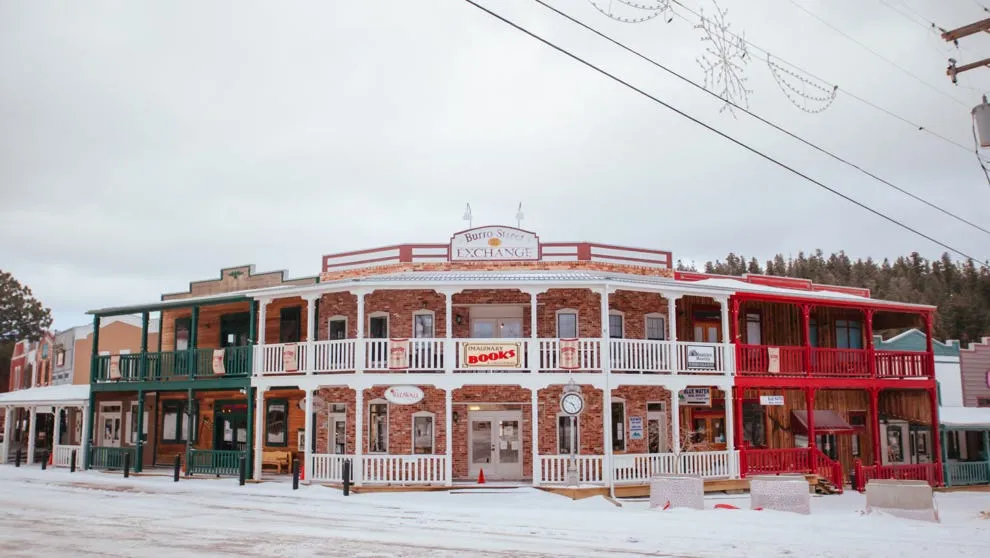

Where It All Began
Founded in 1899 as a retreat from the desert heat, Cloudcroft began as a railroad stop in the Sacramento Mountains. The Alamogordo & Sacramento Mountain Railway brought visitors up from the Tularosa Basin to enjoy cool mountain air, towering pines, and breathtaking views. The village quickly became a beloved escape — and it still is today.
At 8,676 feet, Cloudcroft sits in the heart of the Lincoln National Forest. With four distinct seasons, dark skies, and a vibrant small-town community, it offers a rare combination of natural beauty and authentic mountain culture.
More Than a Mountain Town
Mountain Living
A tight-knit community of artists, business owners, and nature lovers who chose altitude over everything.
Lincoln National Forest
Over 1.1 million acres of forest surrounding the village — hiking, camping, and wildlife at your doorstep.
Dark Sky Community
One of the darkest skies in the U.S. — the Milky Way isn't just visible, it's vivid.

A Place People Call Home
Cloudcroft is home to about 750 year-round residents, but the village swells with visitors who come for the trails, the food, the festivals, and the feeling of being somewhere truly special.